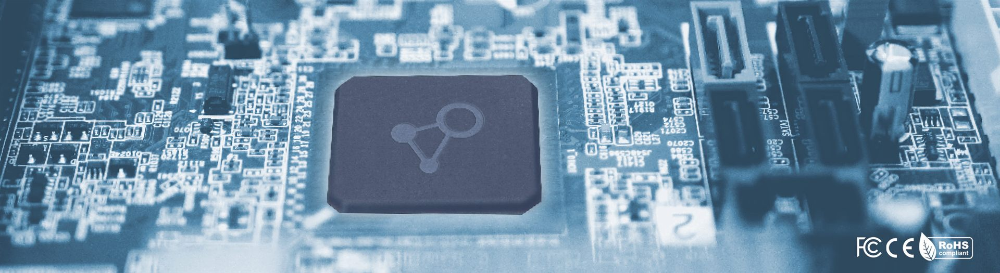
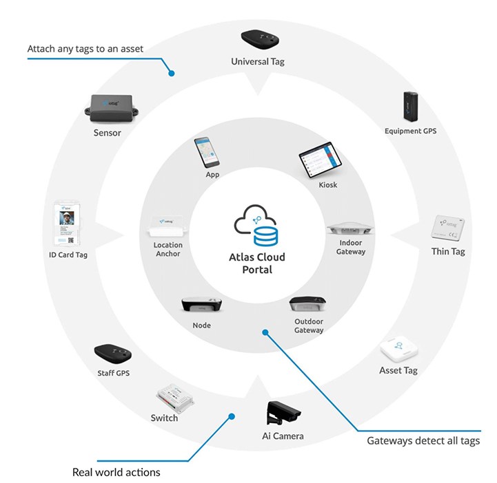
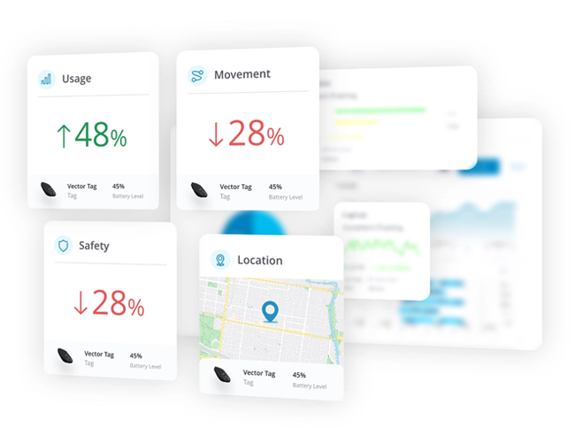

Engineering & Hardware
Engineered For Demanding Operations
iottag designs, engineers, supports and maintains the core components, providing organisations with a single partner responsible for performance across the entire solution lifecycle. From industrial wearables and positioning infrastructure through to software, analytics and operational dashboards, every component is designed to work together as part of a unified operational ecosystem.
Vendor Agnostic
Integrates With Your Existing Site Systems.
Atlas supports a wide ecosystem of best-in-class technologies, sensors and OEM solutions, enabling organisations to deploy the right technology for every operational challenge. The Atlas platform facilitates connection with your OEM systems to unlock operational, fatal risk and production intelligence.


Every project is different
Built Around Your Operation
Atlas is technology agnostic by design, allowing the most appropriate combination of positioning technologies, industrial sensors and OEM systems to be deployed for each operational environment—while presenting everything through one unified Operational Intelligence platform.
Custom Wearables
The Vector Tag
Purpose-Built For Workforce Visibility And Operational Awareness
At the centre of the iottag technology ecosystem is the Vector Tag. A purpose-built industrial wearable designed specifically for demanding operational environments where workforce visibility, emergency response and operational awareness are critical. Unlike consumer-grade devices or repurposed hardware, the Vector Tag has been engineered for real-world deployment across mining, tunnelling, infrastructure and industrial environments.
Key capabilities

Secure By Design
Enterprise Device Governance
Operational technology does not end with deployment. Managing devices throughout their lifecycle is critical to maintaining reliability, security and operational performance. iottag provides comprehensive device governance capabilities that help organisations maintain visibility and control across their technology fleet.
Device health monitoring
Fleet-wide visibility
Lifecycle management
Remote Administration
Firmware deployment
Version Control
Configuration management
Asset accountability
Operational diagnostics
Security Built Into The Ecosystem
Operational environments depend on technology they can trust. Security considerations extend beyond software and include devices, communications, infrastructure and operational processes. The iottag ecosystem is designed to support secure operation throughout the technology lifecycle.
Security is a design principle:
Technology Agnostic
Supporting The Operational Intelligence Ecosystem
End points are one component of a broader Operational Intelligence platform.
Together with positioning infrastructure, software, analytics and operational dashboards, it contributes to a shared operational understanding across the environment.
More Than Hardware
Technology alone does not improve outcomes
The value comes from combining engineering, operational expertise and data science to solve real-world operational challenges.
The iottag ecosystem is designed to support safer operations, improved productivity and better decision-making by creating a clearer understanding of what is happening across the operation.

Technology Designed For Real Operations
Discover how purpose-built technology, end-to-end accountability and Operational Intelligence
help organisations improve visibility, safety and operational performance.